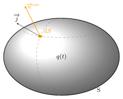
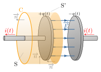
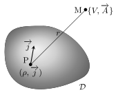

En 1865, le physicien écossais James Clerk Maxwell publie A Dynamical Theory of the
Electromagnetic Field, article dans lequel il unifie les théories électrique et
magnétique en une seule, et établit 20 équations différentielles qui décrivent le
comportement local du champ électromagnétique. C’est Oliver Heaviside qui les réduira à
4 ; les 4 équations de Maxwell qui, associées à la force de Lorentz, forment la
théorie électromagnétique classique.
Lois générales de l’électromagnétisme
Concept de champ électromagnétique
Nous avons vu lors de l’étude des phénomènes électriques et magnétiques en régime
stationnaire, qu’on pouvait les interpréter en faisant intervenir deux champs
indépendants : les charges électriques produisent dans tout l’espace un champ
électrique \(\overrightarrow{E}(M)\) donné par la loi de Coulomb, et les courants
électriques un champ magnétique \(\overrightarrow{B}(M)\) obtenu par la loi de Biot et
Savart.
Les phénomènes d’induction sont venus troubler ce découplage apparent entre magnétisme et
électricité. Lorsque les charges ou les courants évoluent au cours du temps cela produit à
la fois un champ électrique et magnétique sans qu’il soit possible de relier le champ
électrique uniquement à la charge électrique, ni le champ magnétique uniquement au courant
électrique. Ainsi, on admet que l’objet physique pertinent pour décrire ces phénomènes, est
le champ électromagnétique \(\{\overrightarrow{E}, \overrightarrow{B}\}\) qui forme
un tout indissociable. Il s’agit donc d’un objet mathématique constitué de 6 champs
scalaires. Le champ électromagnétique est accessible à l’expérience par l’intermédiaire de
la formule de Lorentz qui donne la force subie par une particule de charge \(q\) et de
vitesse \(\overrightarrow{v}\) dans un référentiel donné :
$$
\quad \boxed{ \overrightarrow{F} = q\left( \overrightarrow{E} + \overrightarrow{v} \wedge
\overrightarrow{B} \right) }
$$
L’objet de ce chapitre est de déterminer les lois qui relient une distribution de charges et
courants modélisée par les densités \( \left( \rho, \overrightarrow{j} \right) \), au champ
électromagnétique \(\{\overrightarrow{E}(M,t), \overrightarrow{B}(M,t)\}\).
Équation de continuité
Toute distribution de charges doit obéir à un principe qui dépasse le cadre de
l’électromagnétisme : la loi de conservation de la charge. Celle-ci se traduit par
une équation locale qui relie densité volumique de charge et densité volumique de courant.
Imaginons un volume \(V\) fixe dans le référentiel d’étude, contenant une charge totale
\(q(t)\). Ce volume est délimité par une surface fermée S. Si l’on caractérise la
distribution des charges par sa densité volumique \(\rho(M,t)\) et son courant
\(\overrightarrow{j}(M,t)\), on a :
$$
\quad q(t) = \iiint_V \rho (M,t) \mathrm{d}\tau
$$
et
$$
\quad i_\text{sortant} = -\bigcirc\!\!\!\!\!\!\!\!\int\!\!\!\!\int_{S}
\overrightarrow{j}(M,t) \cdot \overrightarrow{n}{}^\text{ext} \mathrm{d}S
$$
où \(i_\text{sortant}\) est l’intensité du courant électrique sortant du volume à l’instant
\(t\).

Volume \(V\) chargé, délimité par une surface fermée \(S\).
Le principe de conservation de la charge se traduit par le fait que si \(q(t)\) varie au
cours du temps, c’est que le volume \(V\) a échangé des charges avec l’extérieur sous forme
de courants :
$$
\quad i_\text{sortant} = - \frac{\mathrm{d}q(t)}{\mathrm{d}t}
$$
soit
$$
\quad \bigcirc\!\!\!\!\!\!\!\!\int\!\!\!\!\int_{S}
\overrightarrow{j}(M,t) \cdot \overrightarrow{n}{}^\text{ext} \mathrm{d}S
= - \iiint_V \frac{\partial \rho (M,t)}{\partial t} \mathrm{d}\tau
$$
Le premier terme peut être transformé à l’aide du théorème de Green-Ostrogradski :
$$
\quad \iiint_V \mathrm{div} \overrightarrow{j}(M,t) \mathrm{d}\tau
= - \iiint_V \frac{\partial \rho (M,t)}{\partial t} \mathrm{d}\tau
$$
L’égalité devant être vérifiée quel que soit le volume \(V\) choisi, il en découle la
relation :
$$
\quad \boxed{ \mathrm{div} \overrightarrow{j}(M,t)
+ \frac{\partial \rho (M,t)}{\partial t} = 0}
$$
Cette équation est appelée équation de continuité ou équation de conservation de
la charge.
En régime stationnaire, densité et courant sont indépendants du temps : on retrouve
alors la relation déjà rencontrée \(\mathrm{div} \overrightarrow{j}(M) = 0\) qui exprime le
fait que le courant électrique est à flux conservatif.
Courant de déplacement
Incohérence du modèle
Les phénomènes électromagnétiques étudiés jusqu’ici (l’électrostatique, la magnétostatique
et l’induction électromagnétique) sont bien décrits par les équations résumées ici :
Montrons sur un exemple classique d’électrocinétique que nos équations ne forment pas un
cadre cohérent.
Imaginons la situation d’un condensateur initialement chargé se déchargeant dans une
résistance. Lors de la décharge, un courant électrique circule dans le circuit produisant
ainsi un champ magnétique \(\overrightarrow{B}(M,t)\) autour des fils de connexion.
Considérons un cercle C entourant le circuit comme indiqué sur la figure ci-dessous

Condensateur se déchargeant \(q\) décroît au cours du temps.
Puis calculons la circulation du champ magnétique le long de C à l’aide du théorème de
Stokes :
$$
\quad \oint_C \overrightarrow{B} \cdot \overrightarrow{\mathrm{d}\ell}
= \iint_S \overrightarrow{\mathrm{rot}}\overrightarrow{B} \cdot
\overrightarrow{\mathrm{d}S}
= \iint_S \mu_0 \overrightarrow{j} \cdot \overrightarrow{\mathrm{d}S}
= \mu_0 i(t)
$$
où le flux de \(\overrightarrow{j}\) a été calculé à travers le disque entouré par C. On
retrouve bien entendu le théorème d’Ampère.
Cependant, rien nous oblige à choisir le disque comme surface d’intégration. Toute surface
convient tant qu’elle s’appuie sur le contour C. Prenons donc la surface S’ qui passe entre
les armatures du condensateur. Dans ce cas, aucun courant ne traverse S’ et l’on a :
$$
\quad \oint_C \overrightarrow{B} \cdot \overrightarrow{\mathrm{d}\ell}
= \iint_{S^\prime} \mu_0 \overrightarrow{j} \cdot \overrightarrow{\mathrm{d}S} = 0
$$
en contradiction avec la relation précédente.
C’est en résolvant cette contradiction que Maxwell trouva un cadre cohérent pour unifier les
effets électromagnétiques.
Introduction du courant de déplacement
Dans le calcul précédent on se rend bien compte que le long de la surface S’ le vecteur
\(\overrightarrow{\mathrm{rot}}\overrightarrow{B}\) doit présenter par endroit une valeur
non nulle. Il faut donc modifier la relation d’Ampère. Pour cela, écrivons
$$
\quad \overrightarrow{\mathrm{rot}}\overrightarrow{B}
= \mu_0 \left( \overrightarrow{j} + \overrightarrow{j_\text{d}} \right)
$$
où \(\overrightarrow{j_\text{d}}\) est un terme supplémentaire homogène à une densité
volumique de courant. Ce terme est appelé courant de déplacement.
Or, la conservation de la charge impose \(\mathrm{div} \overrightarrow{j}
= -\frac{\partial \rho }{\partial t}\) ce qui implique :
$$
\quad \mathrm{div} \overrightarrow{j_\text{d}} = \frac{\partial \rho }{\partial t}
$$
Si l’on considère que la relation de Maxwell-Gauss reste valide en régime variable, alors
\(\rho=\varepsilon_0 \mathrm{div} \overrightarrow{E}\), et on aboutit à la relation :
$$
\quad \mathrm{div} \overrightarrow{j_\text{d}}
= \mathrm{div} \left(\varepsilon_0 \frac{\partial \overrightarrow{E}}{\partial t}\right)
$$
Dans ses publications de 1865 Maxwell propose d’adopter la solution particulière la plus
simple, à savoir :
$$
\quad \boxed{ \overrightarrow{j_\text{d}} \overset{\text{def}}{=}
\varepsilon_0 \frac{\partial \overrightarrow{E}}{\partial t}
\quad \left[\rm{A.m^{-2}}\right] }
$$
Ce choix s’est avéré justifié par les conséquences vérifiables expérimentalement.
Vérification du modèle
Reprenons l’exemple précédent. Si l’on adopte l’approximation du condensateur plan, on a, en
notant \(\sigma\) la densité surfacique de charge :
$$
\quad \overrightarrow{E} = \begin{cases}
-\sigma/\varepsilon_0 &\quad \text{à l’intérieur} \\
\overrightarrow{0} &\quad \text{à l’extérieur}
\end{cases}
$$
Par conséquent, lorsque le condensateur se décharge, il apparaît entre les armatures un
courant de déplacement donné par :
$$
\quad \overrightarrow{j_\text{d}}
= \varepsilon_0 \frac{\partial \overrightarrow{E}}{\partial t} = \begin{cases}
- \frac{\partial \sigma }{\partial t} \overrightarrow{n} &\quad \text{à l’intérieur} \\
\overrightarrow{0} &\quad \text{à l’extérieur}
\end{cases}
$$
Reprenons le calcul de la circulation du champ magnétique en faisant intervenir le flux de
\(\overrightarrow{\mathrm{rot}}\overrightarrow{B}\) à travers la surface S’ :
$$
\quad \oint_C \overrightarrow{B} \cdot \overrightarrow{\mathrm{d}\ell}
= \iint_{S^\prime} \mu_0\overrightarrow{j_\text{d}} \cdot \overrightarrow{n} \mathrm{d}S
= - \mu_0 \frac{\mathrm{d}(\sigma S_0)}{\mathrm{d}t}
$$
où \(S_0\) est la surface d’une armature.
Sachant que \(\sigma S_0 = q(t)\), on retrouve le résultat précédent, car \(i=−\mathrm{d}q
/\mathrm{d}t\) (la charge décroît).
Bilan
En résumé, les phénomènes électromagnétiques sont correctement décrits si l’on admet
l’existence d’un champ électromagnétique \(\{\overrightarrow{E}, \overrightarrow{B}\}\)
accessible expérimentalement via la force de Lorentz \( \overrightarrow{F} = q\left(
\overrightarrow{E} + \overrightarrow{v} \wedge \overrightarrow{B} \right)\) et dont les
propriétés locales sont données par les 4 équations de Maxwell :
On distingue deux relations qui relient les champs aux sources (courant et densité de
charge). La première traduit le théorème de Gauss qui découle comme on l’a vu de la loi de
Coulomb et que l’on étend aux régimes variables. La seconde traduit le théorème d’Ampère
modifié par la prise en compte du courant de déplacement pour assurer la conservation de la
charge. Les deux autres relations traduisent les propriétés intrinsèques du champ
électromagnétique indépendamment des sources. La relation de Maxwell-Faraday indique que
toute variation temporelle du champ magnétique induit un champ électrique (phénomène
d’induction), et la dernière postule que le champ magnétique est à flux conservatif.
Notez que le principe de conservation de la charge est implicitement inclus dans les
équations de Maxwell.
Enfin, ces équations de Maxwell sont valables dans tout référentiel galiléen.
Comme on le sait, le référentiel terrestre n’est pas strictement galiléen du fait de sa
rotation propre. Toutefois, l’influence de cette dernière sur les phénomènes
électromagnétiques est tout a fait négligeable.
Résolution des équations de Maxwell
Propriétés
Les équations de Maxwell constituent un système couplé aux dérivées partielles du premier
ordre, dont la solution est le champ électromagnétique. Donnons quelques propriétés de ce
champ.
Continuité du champ
Si les sources sont décrites par une description volumique, le champ électromagnétique est
continu.
Discontinuité du champ
Il arrive que l’on soit amené à idéaliser une situation physique en décrivant un ensemble
de charges ou de courants comme s’ils étaient distribuées le long d’une surface. Ce type de
simplifications conduit à des discontinuités du champ de part et d’autres de la surface. On
retrouve les mêmes propriétés que celles déjà vues dans le cadre des régimes stationnaires.
Nous les résumons ici :
$$
\quad \boxed{ \overrightarrow{E_2} - \overrightarrow{E_1}
= \frac{\sigma}{\varepsilon_0} \overrightarrow{n_{12}} }
$$
et
$$
\quad \boxed{ \overrightarrow{B_2} - \overrightarrow{B_1}
= \mu_0 \left( \overrightarrow{j_s} \wedge \overrightarrow{n_{12}} \right) }
$$
Principe de superposition
Les équations de Maxwell ont le bon goût d’être linéaires par rapport aux champs et aux
sources. Il en découle le principe de superposition suivant : si une distribution
\(\mathcal{D}_1\) crée en M et à l’instant \(t\) un champ électromagnétique
\(\{\overrightarrow{E_1}, \overrightarrow{B_1}\}\), et qu’une autre distribution crée le
champ \(\{\overrightarrow{E_2}, \overrightarrow{B_2}\}\), alors les deux distributions
agissant simultanément créeront le champ électromagnétique
\(\{\overrightarrow{E_1}+\overrightarrow{E_2},\overrightarrow{B_1}+\overrightarrow{B_2}\}\).
Introduction des potentiels
Les équations de Maxwell forment un système d’équations aux dérivées partielles qui ne
permet pas, en général, d’expliciter séparément les champs \(\overrightarrow{E}\) et
\(\overrightarrow{B}\) en fonction des densités \(\rho\) et \(\overrightarrow{j}\). En
revanche, l’introduction des potentiels dont dérivent les champs \(\overrightarrow{E}\) et
\(\overrightarrow{B}\) va nous permettre de découpler le problème. On est ainsi capable
d’exprimer le potentiel \(V\) en fonction de \(\rho\) et le potentiel vecteur
\(\overrightarrow{A}\) en fonction de \(\overrightarrow{j}\). Le champ électromagnétique
s’en déduit par simple dérivation. Cherchons donc à déterminer les équations vérifiées par
les potentiels.
Comme nous l’avons vu dans le chapitre précédent, la conservation du flux magnétique
\(\mathrm{div} \overrightarrow{B} = 0\) implique que \(\overrightarrow{B}\) est un champ
rotationnel :
$$
\quad \boxed{ \overrightarrow{B}(M,t) \overset{\text{def}}{=}
\overrightarrow{\mathrm{rot}}\overrightarrow{A}(M,t) }
$$
En réinjectant dans l’équation de Maxwell-Faraday, on trouve :
$$
\quad \overrightarrow{\mathrm{rot}} \left( \overrightarrow{E} +
\frac{\partial \overrightarrow{A}}{\partial t}\right) = \overrightarrow{0}
$$
Ce qui signifie que le champ à l’intérieur de l’opérateur rotationnel est un gradient. On
pose alors :
$$
\quad \boxed{
\overrightarrow{E} + \frac{\partial \overrightarrow{A}}{\partial t}
\overset{\text{def}}{=} - \overrightarrow{\mathrm{grad}} V
\quad \Rightarrow \quad
\overrightarrow{E} = - \overrightarrow{\mathrm{grad}} V
- \frac{\partial \overrightarrow{A}}{\partial t} }
$$
Le potentiel électromagnétique \(\{V, \overrightarrow{A}\}\) est donc un intermédiaire de
calcul qui permet de déduire le champ électromagnétique \(\{\overrightarrow{E},
\overrightarrow{B}\}\).
Utilisons maintenant les deux autres équations de Maxwell en utilisant les
potentiels :
$$
\quad \mathrm{div}\left( - \overrightarrow{\mathrm{grad}} V
- \frac{\partial \overrightarrow{A}}{\partial t}\right) = \frac{\rho}{\varepsilon_0}
$$
$$
\quad \overrightarrow{\mathrm{rot}}\left(\overrightarrow{\mathrm{rot}}\overrightarrow{A}
\right) = \mu_0 \overrightarrow{j}
- \mu_0 \varepsilon_0 \frac{\partial}{\partial t} \left( \overrightarrow{\mathrm{grad}}V
+ \frac{\partial \overrightarrow{A}}{\partial t} \right)
$$
En utilisant les identités \(\mathrm{div}\left( \overrightarrow{\mathrm{grad}} f \right) =
\Delta f\) et \( \overrightarrow{\mathrm{rot}}\left( \overrightarrow{\mathrm{rot}}
\overrightarrow{A}\right) = \overrightarrow{\mathrm{grad}}\left(
\mathrm{div}\overrightarrow{A} \right) - \Delta \overrightarrow{A}\), on aboutit à :
$$
\quad \Delta V + \frac{\partial \mathrm{div}\overrightarrow{A}}{\partial t}
+ \frac{\rho}{\varepsilon_0} = 0
$$
et
$$
\quad \Delta \overrightarrow{A}
- \mu_0 \varepsilon_0 \frac{\partial^2 \overrightarrow{A}}{\partial t^2}
- \overrightarrow{\mathrm{grad}}\left( \mathrm{div}\overrightarrow{A}
+ \mu_0 \varepsilon_0 \frac{\partial V }{\partial t} \right)
+ \mu_0 \overrightarrow{j} = \overrightarrow{0}
$$
Finalement on aboutit à 4 équations aux dérivées partielles couplées et du second ordre.
Voyons maintenant comment découpler ces équations
Jauge de Lorenz
Rappelons que les définitions des champs magnétique et électrique vues au chapitre précédent
ne définissent pas de manière univoque les potentiels. En effet, les transformations
\(\overrightarrow{A} \rightarrow \overrightarrow{A} + \overrightarrow{\mathrm{grad}}f\) et
\(V \rightarrow V - \frac{\partial f}{\partial t} \) laissent invariantes les relations
\(\overrightarrow{B} = \overrightarrow{\mathrm{rot}}\overrightarrow{A}\) et
\(\overrightarrow{E} = -\overrightarrow{\mathrm{grad}}V -\frac{\partial \overrightarrow{A}}
{\partial t}\).
On peut profiter de cette indétermination pour imposer une condition supplémentaire qui
serait choisie en fonction des simplifications qu’elle apporte. Cette contrainte arbitraire
est dite condition de jauge.
La jauge de Lorenz est une jauge particulière donnée par :
$$
\quad \boxed{ \mathrm{div}\overrightarrow{A}
+\frac{1}{c^2}\frac{\partial V}{\partial t} = 0 \quad / \quad \mu_0 \varepsilon_0c^2=1}
$$
Cette contrainte permet de simplifier grandement les équations précédentes qui deviennent
alors :
$$
\quad \Delta V - \frac{1}{c^2}\frac{\partial^2 V}{\partial t^2}
+ \frac{\rho}{\varepsilon_0} = 0
$$
et
$$
\quad \Delta \overrightarrow{A}
- \frac{1}{c^2}\frac{\partial^2 \overrightarrow{A}}{\partial t^2}
+ \mu_0 \overrightarrow{j}
= \overrightarrow{0}
$$
Ainsi, on obtient deux équations découplés, qui relient le potentiel scalaire à la densité
de charge, et le potentiel vecteur au courant. Les solutions ont été introduites par Lorenz
et sont appelées potentiels retardés.
Potentiels retardés (jauge de Lorenz) :
Chaque point P d’une distribution \(\mathcal{D}\) de charges et courants modélisée par les
densités \(\rho\) et \(\overrightarrow{j}\) produit en un point M les potentiels
suivant :
$$
\quad \boxed{ V(M,t) = \frac{1}{4\pi\varepsilon_0}
\iiint_{\mathcal{D}} \frac{\rho(P, t-r/c)}{r} \mathrm{d}\tau }
$$
et
$$
\quad \boxed{ \overrightarrow{A}(M,t) = \frac{\mu_0}{4\pi}
\iiint_{\mathcal{D}} \frac{\overrightarrow{j}(P, t-r/c)}{r} \mathrm{d}\tau }
$$

Notations associées aux potentiels retardés.
Tout se passe comme si chaque point P de la distribution produisait en M un potentiel
électromagnétique correspondant à celui vu en régime stationnaire à ceci près qu’il faut
considérer l’état de P à l’instant \(t - PM/c\) pour connaître l’effet en M à l’instant
\(t\). Ce retard est dû au terme en \(\frac{1}{c^2}\frac{\partial^2}{\partial t^2}\) qui
traduit un phénomène de propagation à la vitesse \(c\).
Insistons sur le fait que ce découplage n’est possible qu’avec les potentiels et dans le
cadre de la jauge de Lorenz. Le découplage des champs \(\overrightarrow{E}\) et
\(\overrightarrow{B}\) n’est possible qu’en régime statique. Une fois ces potentiels
calculés, on en déduit le champ électromagnétique.
Approximation des régimes quasi-stationnaires
Comme nous venons de le voir, le potentiel électromagnétique \(\{V, \overrightarrow{A}\}\)
dépend de l’état des sources à l’instant \(t - PM/c\) avec \(\mu_0\varepsilon_0c^2=1\). Nous
verrons que \(c\) correspond à la vitesse de propagation des ondes électromagnétiques et
qu’elle vaut environ \( 3 \times 10^8 \, \rm{m.s^{-1}}\).
ARQS :
L’approximation des régimes quasi-stationnaires (ARQS) consiste à négliger le terme de
propagation, autrement dit à considérer la vitesse de propagation infinie.
Dans ce contexte, les potentiels prennent la forme suivante :
$$
\quad V(M,t) = \frac{1}{4\pi\varepsilon_0}
\iiint_{\mathcal{D}} \frac{\rho(P,t)}{r} \mathrm{d}\tau
$$
et
$$
\quad \overrightarrow{A}(M,t) = \frac{\mu_0}{4\pi}
\iiint_{\mathcal{D}} \frac{\overrightarrow{j}(P,t)}{r} \mathrm{d}\tau
$$
On en tire plusieurs conséquences.
L’expression du potentiel vecteur est la même que celle vue en magnétostatique, à une nuance
près : la densité de courant dépend a priori du temps. Ainsi, la loi de Biot et
Savart reste valide dans l’ARQS.
Pour les mêmes raisons, le théorème d’Ampère vu en magnétostatique est encore
valide :
$$
\quad \overrightarrow{\mathrm{rot}}\overrightarrow{B}(M,t) = \mu_0 \overrightarrow{j}(M,t)
$$
Par conséquent, l’ARQS revient à négliger le courant de déplacement \(
\overrightarrow{j_\text{d}}=\varepsilon_0 \frac{\partial \overrightarrow{E}}{\partial t}\).
Prenons la divergence de l’équation de Maxwell précédente. On aboutit à \( \mathrm{div}
\overrightarrow{j} = 0\) : dans l’ARQS, le flux du courant électrique se conserve.
C’est cette propriété qui est à la base de l’électrocinétique. (On en tire la loi des nœuds.
En particulier, en tout point d’une branche d’un circuit l’intensité électrique prend la
même valeur à un instant \(t\).)
Bien que le potentiel scalaire présente la même expression qu’en régime stationnaire, le
champ électrique viole la loi de Coulomb puisque :
$$
\quad \overrightarrow{E} = - \overrightarrow{\mathrm{grad}} V(M,t)
- \frac{\partial \overrightarrow{A}(M,t)}{\partial t}
$$
Autrement dit, l’ARQS néglige les phénomènes de propagation mais pas les phénomènes
d’induction.
L’ARQS suppose que la source évolue au cours du temps avec un temps caractéristique \(T\)
suffisamment grand devant le retard \(\tau\) dû à la propagation. En régime sinusoïdal cela
signifie que :
$$
\quad \frac{PM}{c} \ll T \Leftrightarrow PM \ll ct = c/\nu = \lambda
$$
En particulier, sur une distance de \(1\,\rm{m}\), l’ARQS est valable pour des fréquences
\(\nu \ll 300\,\rm{MHz}\) : c’est le domaine de l’électrocinétique. Dans le cas des
courants industriels la fréquence est fixée à \(50\,\rm{Hz}\), ce qui impose \(PM\ll 6\,000
\,\rm{km}\) : à l’échelle d’un pays, le transport de l’électricité peut être traité
dans le cadre de l’ARQS.